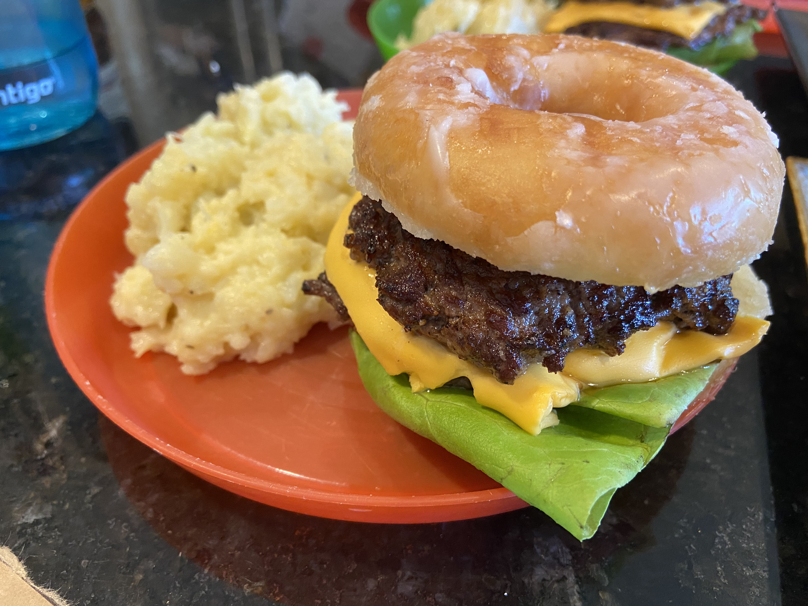

Krispy Kreme Smash Burger

Ingredients
Sauce
- 4 Tablespoons mayonnaise
- 2 Tablespoons minced shallot
- 3 teaspoons finely chopped dill pickles plus 1 teaspoon brine
- 1 teaspoon ketchup
- ¼ teaspoon sugar
- ¼ teaspoon pepper
Burgers
- 4 Krispy Kreme Glazed Donuts, sliced
- 1 pound (80% lean) ground beef
- ½ teaspoon vegetable oil
- ½ teaspoon kosher salt; divided
- 4 slices American cheese
- Bibb lettuce leaves
- Thinly sliced tomato
Steps
Notes: You can use 85% lean ground beef, but 90% lean will produce a dry burger.
Having an assistant waving a towel near the smoke detector will be very helpful during the cooking steps. Pressing
the patties strongly is required to generate the desired patty thinness and crust. American cheese is recommended
for correct meltiness.
- Stir all sauce ingredients together in bowl.
- Spread ½ tablespoon sauce on cut side of top donut half
- Divide beef into 8 equal pieces (2 ounces each); form into loose, rough balls (do not compress).
- Place oil in 12-inch cast-iron skillet. Use paper towel to rub oil into bottom of skillet (reserve towel). Heat skillet over medium-low heat for 5 minutes.
- Set oven to 200° and place wire rack in rimmed baking sheet in oven.
- While skillet heats, wrap bottom and sides of small saucepan with large sheet of aluminum foil and place large plate next to cooktop.
- Increase heat to high (and position assistant near smoke alarm). When skillet begins to smoke, place 2 balls about 3 inches apart in skillet.
- Use bottom of prepared saucepan to firmly smash each ball until 4 to 4½ inches in diameter. Place saucepan on plate next to cooktop.
- Sprinkle patties with ⅛ teaspoon salt and season with pepper.
- Cook until at least ¾ of each patty is no longer pink on top, about 2 minutes (patties will stick to skillet).
- Use thin metal spatula to loosen patties from skillet, flip and cook for 15 seconds, then transfer to warming rack.
- Gently scrape any browned bits from skillet, use tongs to wipe with reserved paper towel. Return to heat.
- Repeat with two more balls, then cover each with one slice cheese.
- Repeat and cover each slice with additional meat patty.
- Assemble with donut bottom, lettuce, burger stack, tomato and cap with prepared top. Serve immediately.
Home